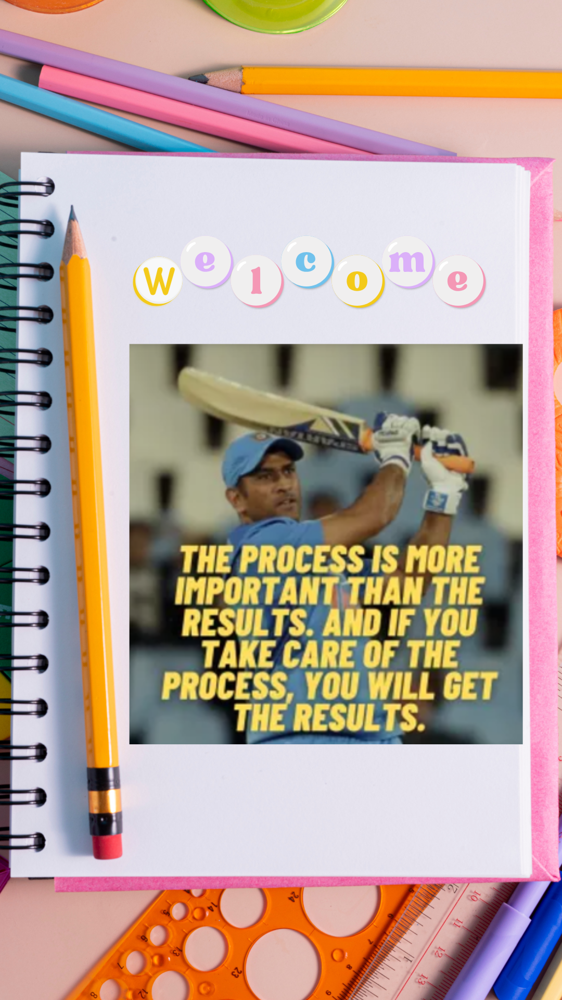
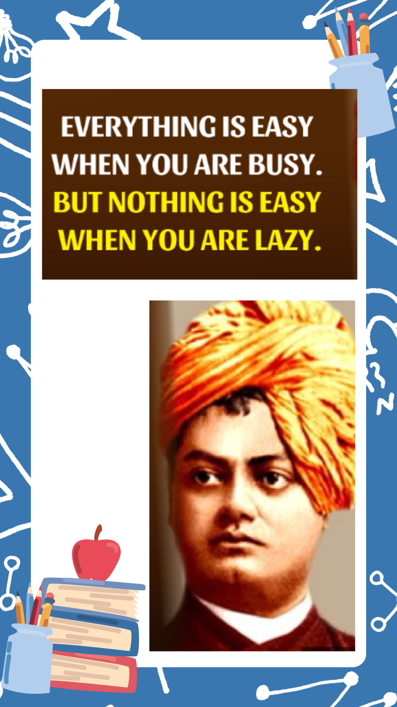

.png)
Ans: Yes. Democracy without freedom is meaningless. Democracy means freedom of people to choose their government. For this they must have freedom of speech and freedom of movement with fear.
In democracy citizens have the power to choose their representatives. It is very important that they use this power most judiciously. They should also see that their representatives are doing their duty in the right way.
A citizens has fundamental rights. They are important to be a free citizen of a country. If a person has no fundamental rights he is not a citizen. He/she is a slave.
Yes, I know it moves smoothly because it obeys the rule of the road. If vehicles and pedestrians did not obey the rule of the road, there would be confusion and accidents.
She refused to walk on the pavement because she believed she had got the liberty to walk where she liked.
By walking in the middle of the road she disobeyed the rule of the road and caused confusion. Everybody was getting in everybody else’s way.
The author has defined liberty as a social contract. It is an adjustment of interests.
Liberty is not entirely a private matter. We live in society. So no man’s liberty should take away another man’s liberty. By so doing everybody will enjoy a social order and peace.
The author is referring to the danger of a chaos like the one the old lady caused by disobeying the rule of the road. If everybody wants unlimited liberty, there will be chaos.
Liberty is a social contract in the sense that no individual will trample over the liberty of anyone else.
No. The rights of the people are as important as the rights of the nations.
He could not read his book because one of the passengers was talking to his friend in a loud and pompous voice.
The author wants to say that everybody has a right to enjoy themselves so long as they do not disturb others.
The author refers to reading for pleasure and reading as a task. The two are different. You won’t mind noise if you are reading for pleasure. But if you are reading as a task, you will expect reasonable quiet.
Some of the actions referred to in the lesson are: